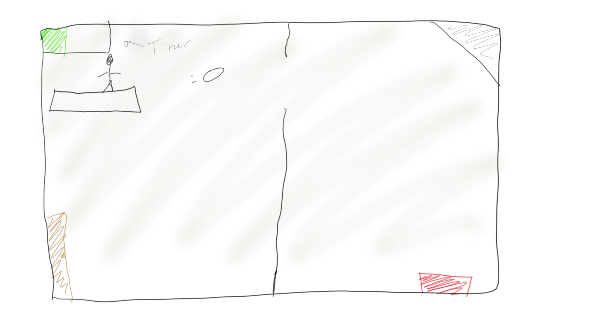

High Concept
A puzzle platformer with breakout like projectile mechanics
Genre
The genre is a puzzle platformer, with a bit of a shooter
Platform
Game is playable on the web, however a keyboard is assumed
Story
The story is simple and exists to justify the gameplay. You are trying to break out of a dungeon
Aestetics
Basic Geometric shapes will make up the world, with darker colors
Gameplay
- Mechanics
The player has a ball which follows breakout physics, as well as basic platformer abilities, but they cannot move when they have the ball. If they want to move, they must throw the ball, and to get the ball back they have to catch it. Too much time spent without the ball results in a death
- Controls
Wasd to move, as stated above movement is only possible when the ball is not carried, mouse is used to aim the ball
- OnBoarding
Short instructional panel at start to explain basic mechanics, new obstacle types are introduced throughout the gameplay with easy puzzles to demonstrate how the new mechanics work
- Learning
The player has to learn how to throw the ball so that it can be caught in a timely manner, as well as balance possesion of the ball to solve certain puzzles.
Screenshots

About the Developers
Ben Schlegel is a Game Development major with a minor in Mathematics. He is interested in programming, systems designing and game physics